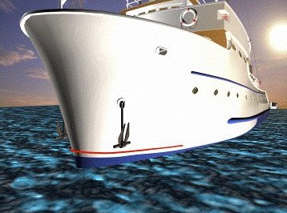
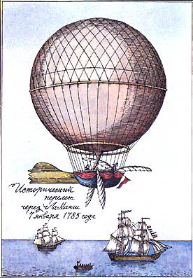

Судна, які плавають по річках, озерах, морях і океанах, збудовано з різних матеріалів неоднакової густини. Корпус суден звичайно виготовляють із сталевих листів. Усі внутрішні кріплення, що надають суднам міцності, теж виготовляють з металів. Побудова суден потребує десятків інших матеріалів, що мають порівняно з водою як більшу, так і меншу густину. Завдяки ж чому судна тримаються на воді, беруть на борт і перевозять великі вантажі?
Давайте розберемось:
Від самого зародження будування кораблів люди докладають масу зусиль, намагаючись створити кораблі, які не тонуть. Перші дерев'яні судна були легше води. Але розвиток науки і знання законів фізики дозволили будувати і сталеві, і навіть залізобетонні судна. Залізобетонні кораблі будувалися в Північній Америці в першій половині XX століття, коли під час двох світових воєн відчувався дефіцит сталі.
Плавучість судна визначається законом Архімеда: рідина виштовхує тіло з силою, яка дорівнює вазі рідини в об'ємі зануреної в неї частини тіла.
Повітроплавання (аерона́втика) — керовані або некеровані польоти в атмосфері Землі на літальних апаратах легших за повітря (на відміну від авіації, що використовує літальні апарати важчі повітря).
У 1782 році брати Жан-Ет’єнн і Жозеф-Мішель Монгольф’є, які захоплювались питаннями динамічного повітроплавання, а також намагалися експериментувати з оболонками, що наповнюються воднем, знайомі з цим відкриттям, дійшли висновку, що причиною підйому хмар є їх електризація. З метою отримання газу, що володіє електричними властивостями, вони почали спалювати мокру солому і вовну. Цей матеріал вони використовували за аналогією з процесами, що відбуваються в електрографії, а воду додавали для отримання пари, схожого з складом хмар. Свої кулі (спочатку вони були прямокутних форм і тільки потім сферичні) вони називали аеростатичного машинами.
Давайте розберемось як вона літає:
Для польотів на повітряній кулі використовується монгольф'єр - апарат, який піднімається в повітря шляхом нагрівання повітря. Сама повітряна куля не передбачає управління, вона летить за вітром, а опускання відбувається за рахунок відкриття спеціального клапана, який запускає в купол холодне повітря.
На жаль, у цього апарату вагові обмеження. Заборонено брати участь в польоті людей, вага яких перевищує 130 кг. В середньому політ на повітряній кулі триває одну годину. Обов'язкова умова це хороша, не дощова погода і швидкість вітру, що не перевищує 4 м/с.